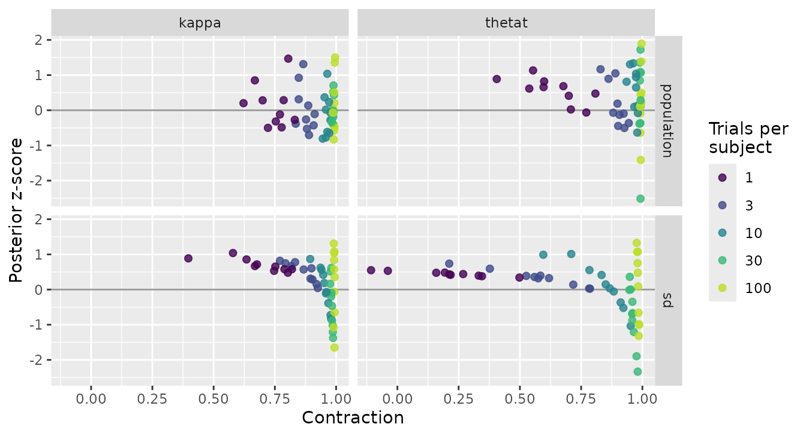

This page defines every column summary() returns for a
bmmtools_recovery object: what is computed, over which
rows, and when the value is NA. It describes the
computation only.
s <- tibble::as_tibble(summary(recovery_mixture2p))
print(s[1:4, c(
"condition", "term", "level", "scale", "n", "n_replications",
"n_converged", "bias", "rmse", "coverage", "coverage_50", "ci_width",
"ci_width_50"
)], width = Inf)
#> # A tibble: 4 × 13
#> condition term level scale n n_replications n_converged bias rmse
#> <chr> <chr> <chr> <chr> <dbl> <int> <int> <dbl> <dbl>
#> 1 row-1 kappa population natural 5 5 3 0.427 1.45
#> 2 row-1 thetat population natural 5 5 3 0.0349 0.0678
#> 3 row-2 kappa population natural 5 5 4 0.656 0.671
#> 4 row-2 thetat population natural 5 5 4 -0.000662 0.00505
#> coverage coverage_50 ci_width ci_width_50
#> <dbl> <dbl> <dbl> <dbl>
#> 1 0.8 0.2 3.58 1.20
#> 2 0.8 0 0.151 0.0502
#> 3 1 0.2 2.45 0.834
#> 4 1 1 0.0850 0.0285
print(s[1:4, c(
"condition", "term", "level", "r", "r_low", "r_high", "rank_r", "ccc",
"calibration_slope", "calibration_intercept"
)], width = Inf)
#> # A tibble: 4 × 10
#> condition term level r r_low r_high rank_r ccc calibration_slope
#> <chr> <chr> <chr> <dbl> <dbl> <dbl> <dbl> <dbl> <dbl>
#> 1 row-1 kappa population NA NA NA NA NA NA
#> 2 row-1 thetat population NA NA NA NA NA NA
#> 3 row-2 kappa population NA NA NA NA NA NA
#> 4 row-2 thetat population NA NA NA NA NA NA
#> calibration_intercept
#> <dbl>
#> 1 NA
#> 2 NA
#> 3 NA
#> 4 NA
print(s[1:4, c(
"condition", "term", "level", "z_mean", "z_sd", "z_mean_mcse",
"z_sd_mcse", "contraction"
)], width = Inf)
#> # A tibble: 4 × 8
#> condition term level z_mean z_sd z_mean_mcse z_sd_mcse contraction
#> <chr> <chr> <chr> <dbl> <dbl> <dbl> <dbl> <dbl>
#> 1 row-1 kappa population 0.217 1.73 0.775 0.612 NA
#> 2 row-1 thetat population 0.655 1.52 0.681 0.539 NA
#> 3 row-2 kappa population 1.10 0.290 0.130 0.102 NA
#> 4 row-2 thetat population -0.0321 0.284 0.127 0.100 NAWhich rows each row summarises
One summary row covers one parameter (term) at one
level, and one condition when the object comes
from recovery_grid(). Write \(\hat\theta_i\) for the estimate in row
\(i\) (the posterior median), \(\theta_i\) for the generating value, and
\([l_i, u_i]\) for the credible
interval, all on the scale in the scale column.
At the population level the rows are the replications, one estimate per fit. At the subject level the rows are subjects within replications; the error metrics use all of them, and the correlation metrics are computed within each replication and then combined, as described below.
Missing values are dropped pairwise before anything is counted, so
n always reports the pairs a metric used.
Identification columns
-
term,level,scale -
The parameter,
"population"or"subject", and"natural"or"link". n- Complete estimate–truth pairs. At subject level, the mean number of subjects per replication.
n_replications- Distinct replications contributing to the row.
n_converged-
Replications whose fit passed
check_convergence()with the thresholds in force when the estimates were extracted.NA, not 0, when no row carries a verdict, as with a hand-built estimates tibble.
Error metrics
bias- The mean signed error, \(\frac{1}{n}\sum_i (\hat\theta_i - \theta_i)\).
rmse- The root mean squared error, \(\sqrt{\frac{1}{n}\sum_i (\hat\theta_i - \theta_i)^2}\).
coverage-
The share of intervals containing the generating value, \(\frac{1}{n}\sum_i \mathbb{1}[l_i \le \theta_i \le
u_i]\). The interval is closed, so a bound equal to the truth
counts as covered. Its nominal value is the
ci_levelof the estimates, 0.95 by default. ci_width- The mean interval width, \(\frac{1}{n}\sum_i (u_i - l_i)\).
-
coverage_50,ci_width_50 -
The same two for the central 50 % interval, the 25th to the 75th
percentile of the draws, stored beside the
ci_levelinterval asci_low_50andci_high_50. Its nominal coverage is 0.5 whateverci_levelis. Where the 95 % interval checks the tails of the posterior, this one checks its centre: a coverage of 0.95 with acoverage_50far above 0.5 says the intervals are too wide in the middle.NAwhen the estimates carry no inner bounds, as in a hand-built estimates tibble.
These are NA only when no complete pair exists, except
for the inner columns as just described.
Correlation metrics
-
r,r_low,r_high -
The Pearson correlation between estimates and truth with a 95%
confidence interval from Fisher’s \(z\)
transformation, \(z =
\operatorname{atanh}(r)\) with standard error \(1/\sqrt{n-3}\), transformed back with \(\tanh\). The interval is always 95% and
does not follow
ci_level, which is the mass of the posterior intervals. rank_r- The Spearman rank correlation.
ccc- Lin’s concordance correlation coefficient (Lin 1989), computed with population moments (dividing by \(n\)): \[\rho_c = \frac{2 s_{\hat\theta\theta}}{s^2_{\hat\theta} + s^2_\theta + (\bar{\hat\theta} - \bar\theta)^2} = 1 - \frac{\frac{1}{n}\sum_i (\hat\theta_i - \theta_i)^2}{s^2_{\hat\theta} + s^2_\theta + (\bar{\hat\theta} - \bar\theta)^2}.\] The second form shows it as a rescaled mean squared deviation from the identity line.
-
ccc_low,ccc_high -
A 95% confidence interval from Lin’s \(Z\) transformation, \(Z = \operatorname{atanh}(\rho_c)\), with
Lin’s asymptotic variance for random bivariate normal pairs, which
depends on \(n\), \(r\), \(\rho_c\) and the location shift Lin (2000).
NAwith three or fewer pairs, at \(\rho_c = \pm 1\), and when \(r = 0\). When the generating values are fixed by a design grid rather than drawn, the interval is an approximation. ccc_accuracy- Lin’s bias-correction factor \(C_b = 2 / (v + 1/v + u^2)\), so that \(\rho_c = r \cdot C_b\): Pearson’s \(r\) measures precision and \(C_b\) accuracy, the distance of the best-fitting line from the identity line.
ccc_scale_shift- The ratio of standard deviations, \(v = s_{\hat\theta} / s_\theta\).
ccc_location_shift- The mean difference relative to the geometric mean of the two standard deviations, \(u = (\bar{\hat\theta} - \bar\theta) / \sqrt{s_{\hat\theta}\, s_\theta}\).
calibration_slope- The slope of the generating value regressed on the estimate, \(s_{\hat\theta\theta} / s^2_{\hat\theta} = r / v\). See Reading the concordance.
calibration_intercept-
The intercept of the same regression, \(a =
\bar\theta - b\,\bar{\hat\theta}\) with \(b\) the calibration slope: the generating
value the line predicts at an estimate of 0. It is read on the scale of
the row, so a summary on the link scale and one on the natural scale
give different intercepts for the same fits. It is not
calibration-in-the-large, \(\bar\theta -
\bar{\hat\theta}\), which fixes the slope at 1 and equals \(-\)
bias. The two are related by \(a = (\bar\theta - \bar{\hat\theta}) - (b - 1)\,\bar{\hat\theta}\), so when the slope is far from 1 and 0 lies far from the estimates, the intercept mostly restates the slope. Read the two together, as one line. truth_sd- The standard deviation of the generating values, \(s_\theta\) (population moments).
All correlation metrics are NA, never 0, when fewer than
three complete pairs exist or when estimates or truth have no spread.
This is why population-level correlations are NA in a grid
whose replications share their population values. With exactly three
pairs, r has a point estimate and no interval.
Subject level: within replication, then combined
At subject level, each replication is correlated on its own. The Pearson and Spearman correlations are then combined on Fisher’s \(z\) scale with weights \(n_k - 3\), where \(n_k\) is the number of subjects in replication \(k\):
\[\bar z = \frac{\sum_k (n_k - 3)\, z_k}{\sum_k (n_k - 3)}, \qquad \operatorname{SE}(\bar z) = \frac{1}{\sqrt{\sum_k (n_k - 3)}}.\]
r is \(\tanh(\bar z)\)
and its interval is \(\tanh(\bar z \pm 1.96\,
\operatorname{SE})\). With one replication this is the ordinary
Fisher interval. rank_r is combined the same way, without
an interval.
ccc is combined on Lin’s \(Z\) scale, which approaches normality much
faster than \(\rho_c\) itself (Lin 1989, 259, 268). The weights are the
inverse of each replication’s asymptotic variance \(\sigma^2_{Z,k}\) rather than \(n_k - 3\), because that variance also
depends on \(r\) and the location
shift:
\[\bar Z = \frac{\sum_k Z_k / \sigma^2_{Z,k}}{\sum_k 1 / \sigma^2_{Z,k}}, \qquad \operatorname{SE}(\bar Z) = \frac{1}{\sqrt{\sum_k 1/\sigma^2_{Z,k}}}.\]
If any replication has a coefficient but no variance (three subjects,
or a coefficient of exactly 0 or 1), ccc is the unweighted
mean on the \(Z\) scale and the
interval is NA. Dropping those replications would drop
exactly the extreme values.
The pooled interval is slightly too narrow when many small replications are combined. Each replication’s \(Z\) is a little biased towards zero, pooling keeps that bias while the standard error shrinks, and in a simulation of calibrated posterior means with 30 subjects per replication its coverage was .936 with 5 replications and .928 with 20 (500 studies each).
ccc_scale_shift and calibration_slope are
ratios and are combined as geometric means, so that \(v\) and \(1/v\) count as equal departures from 1.
ccc_accuracy, ccc_location_shift and
calibration_intercept are plain means (an intercept can be
0 or negative), and truth_sd is the square root of the mean
variance. At subject level \(\rho_c = r \cdot
C_b\) therefore holds only approximately.
z-score and contraction
These two are computed on the link scale whatever the
scale column says, from the posterior mean \(m_i\) and posterior standard deviation
\(s_i\) that each row stores as
post_mean_link and post_sd_link. For a maximum
likelihood row, \(m_i\) is the point
estimate and \(s_i\) its standard
error. Coverage is not recovery
shows how to read them.
-
z_mean,z_sd -
The mean and standard deviation of the posterior z-scores \(z_i = (m_i - \theta_i) / s_i\), one per
row. Because each \(z_i\) is already
standardised, the subject rows of all replications are pooled directly,
without the within-then-combine step of the correlations. Rows whose
\(z_i\) is
NAare left out. -
z_mean_mcse,z_sd_mcse - Their Monte Carlo standard errors, \(\operatorname{SD}(z)/\sqrt{n}\) and \(\operatorname{SD}(z)/\sqrt{2(n-1)}\). For independent, normally distributed \(z_i\) the first is exact and the second the large-sample approximation to the sampling error of an SD. Subject rows of one replication share a population posterior, and heavy tails widen the sampling error of a standard deviation, so at subject level both understate it.
contraction-
The mean, over the rows that have one, of \(c_i = 1 - s_i^2 /
\sigma^2_{\text{prior},i}\), the share of the prior variance that
the data removed. It needs the prior standard deviation of each
parameter, given as
prior_sdtorecover()orrecovery_grid(): a table such asprior_sd_table()returns, or a prior-only fit. Without one it isNA, as inrecovery_mixture2pabove. It is alsoNAat subject level, where a posterior narrows through pooling as well as through the subject’s own data, and for maximum likelihood rows, which have no prior. It is not clamped at 0: a posterior wider than its prior is a finding, not a rounding error.
Reading the concordance
\(r\) asks whether the estimates order the generating values correctly. \(\rho_c\) asks whether they reproduce the values themselves. Which one matters depends on the question: for individual differences the rank order is what carries over to correlations with other measures, while absolute values matter when a parameter is compared across studies or against a fixed criterion (Katahira et al. 2024, 2477).
Hierarchical models complicate the second reading. A posterior mean is shrunk towards the population mean, and when the model is calibrated the shrinkage is exactly as large as the data warrant. The error \(\theta - \hat\theta\) is then uncorrelated with \(\hat\theta\), so \(\operatorname{cov}(\hat\theta, \theta) = \operatorname{var}(\hat\theta)\), and three things follow:
- \(v = r\): the scale shift equals the recovery correlation, not 1;
-
calibration_slope\(= r / v = 1\); - with no location shift, \(\rho_c = 2r^2 / (1 + r^2)\), a function of \(r\) alone.
A scale shift below 1 is therefore not a defect by itself.
calibration_slope is the column to read against 1: above 1
the estimates are shrunk more than the data warrant, below 1 less.
The table shows this for a normal model with exact posterior means, 50 subjects and 2000 replications per row. The unpooled estimate is the per-subject maximum likelihood estimate.
| generating model and prior | estimator | \(r\) | \(\rho_c\) | \(v\) | slope | \(u\) | RMSE |
|---|---|---|---|---|---|---|---|
| calibrated, reliability .50 | unpooled | .704 | .657 | 1.420 | 0.50 | −.002 | .997 |
| calibrated, reliability .50 | posterior mean | .704 | .657 | 0.710 | 1.00 | −.005 | .706 |
| prior SD too small | posterior mean | .705 | .365 | 0.284 | 2.50 | .014 | .820 |
| prior SD too large | posterior mean | .704 | .691 | 1.137 | 0.63 | .000 | .819 |
| prior mean off by 0.5 | posterior mean | .703 | .629 | 0.712 | 1.00 | .306 | .748 |
Because \(C_b\) treats \(v\) and \(1/v\) alike, \(\rho_c\) cannot tell calibrated shrinkage
from no shrinkage (.657 in both rows), and it rewards too
little shrinkage (.691 against .657) although the RMSE is worse. It does
detect too much shrinkage and a shifted location. Read ccc
together with rmse and calibration_slope, and
use r when only the rank order of subjects matters.
The table above is a conjugate toy, where the posterior means are
exact and the algebra therefore holds to the last decimal. Hierarchical estimation against
subject-wise maximum likelihood is the same contrast for a real bmm
model, sampled rather than derived: mixture2p fitted
hierarchically and subject by subject on one data set, and again over a
grid.
Two caveats. The identities above assume that the generating values
are drawn from the population the model estimates; with generating
values from a hand-picked uniform range they hold only roughly. And
\(\rho_c\), like \(r\), grows with the spread of the
generating values at a fixed measurement error: in the same simulation,
doubling truth_sd raised \(\rho_c\) for the calibrated posterior mean
from .657 to .885. Compare either coefficient only between rows with
similar truth_sd.
Coverage is not recovery
An interval can contain the generating value for two reasons: the data located the parameter, or the prior put its mass near the truth. Coverage counts both alike. In a recovery study the analyst chooses the generating values and the priors, usually from the same sense of what is plausible, so the second reason is easy to meet by accident. The case that motivated these columns came from the development of a linear ballistic accumulator model for bmm, not from bmmtools: a recovery reported every parameter inside its 95 % interval, while in one scenario the likelihood was flat along one direction of the parameter space. Along that direction the posterior SD was 0.494 and the prior SD 0.500, a contraction of \(1 - 0.494^2 / 0.500^2 = 0.024\). The interval covered because the prior did.
Contraction and the z-score separate the two reasons (Schad et al. 2021). Contraction says how much the data narrowed the prior: near 1 the posterior is the data’s, near 0 it is still the prior. The z-score says how far the posterior mean is from the truth in units of posterior SD. Plotted against each other, they mark four regions (Schad et al. 2021, fig. 5): high contraction with small \(|z|\) is the ideal; high contraction with large \(|z|\) is a posterior fitted to noise in the data; low contraction with small \(|z|\) is a parameter the design does not identify; and low contraction with large \(|z|\) is a prior in conflict with the likelihood.
A design that informs every parameter well puts all its points in the
ideal corner, which shows little. The grid below is built to reach the
low end as well: mixture2p with 20 subjects and 1, 3, 10,
30 or 100 trials each, 10 replications per row, bmm’s default priors,
and their closed-form SDs through
prior_sd = "analytic".
library(bmmtools)
model <- bmm::mixture2p(resp_error = "y")
pars <- c(kappa = log(8), thetat = qlogis(0.75))
sds <- c(kappa = 0.3, thetat = 0.5)
out <- recovery_grid(
model,
grid = data.frame(n_subjects = 20, n_trials = c(3, 10, 30, 100, 1)),
pars = pars, sds = sds,
dir = file.path(fits_dir, "metrics-contraction"),
reps = 10,
prior_sd = "analytic",
levels = c("population", "sd"),
scale = "link",
seed = 2031,
chains = 4, iter = 2000, cores = 4,
backend = "cmdstanr", refresh = 0, silent = 2
)
199 of the 200 intervals contain the generating value, so a coverage
table finds nothing wrong with this grid. (The count includes the one
replication, at 10 trials, whose fit missed bmmtools’ convergence
thresholds.) Contraction does. With 100 trials per subject it lies
between 0.977 and 0.996 for every term. With one trial it falls to
0.41–0.83 for the population values, and for the SD of
thetat to a median of 0.21; in 2 replications the posterior
is wider than the prior (contraction down to -0.108). All 10 of those
intervals covered, and their z-scores lie between 0.34 and 0.55. The
replications agree with each other because each reports the prior, not
because each locates the parameter.
Reading z when the generating values are fixed
The usual reading of z, a mean of 0 for no bias and an SD of 1 for calibrated uncertainty, holds when the generating values are drawn from the prior, as in simulation-based calibration and in the procedure of Schad et al. (2021). A recovery grid holds them fixed, and then z also carries the prior’s pull. In a conjugate normal model with prior \(\mathcal{N}(\mu_0, \tau^2)\), a fixed truth \(\theta\) and contraction \(c\), the z-score over replications is distributed as
\[z \sim \mathcal{N}\!\left(\sqrt{1 - c}\,\delta,\; c\right), \qquad \delta = \frac{\mu_0 - \theta}{\tau},\]
so its SD is \(\sqrt{c}\), the posterior SD over the standard error of the data-only estimate, which is below 1. Its mean moves away from 0 on the side of the prior mean as \(c\) falls, because the posterior mean is pulled towards the prior mean. With \(\theta\) drawn from the prior, the same model gives \(z \sim \mathcal{N}(0, 1)\) at every contraction.
bmm’s models are not conjugate, and the formula does not predict the
grid’s numbers term by term. The direction shows all the same. The
spread of z shrinks as contraction falls: for the SD of
thetat, z_sd is 1.00 at 100 trials and 0.066
at one. And every z of the two SD terms at one and three trials is
positive (the smallest is 0.025): bmm’s default prior on an SD,
exponential(1), has its mean at 1, above the generating SDs
of 0.3 and 0.5.
Read z_mean and z_sd against 0 and 1 only
where contraction is near 1. At \(c =
0.99\) the conjugate shift is \(0.1\,\delta\) and the SD \(0.995\). Below that, read
contraction first. With 10 replications per row,
z_sd_mcse is \(1/\sqrt{18}
\approx 0.24\) of z_sd itself, so this grid supports
the direction of these differences, not their size.
The scale
recover() and recover_subjects() score on
the natural scale by default: estimates, interval bounds and truth are
converted with inverse_link() before any metric is
computed, and scale = "link" skips the conversion. Coverage
does not depend on the choice, because a monotone transformation keeps a
value inside its interval, but bias, RMSE, interval width and the
correlations do.
Two links need care at zero. Under the sqrt link, an
interval that spans zero on the link scale becomes \([0, \max(l^2, u^2)]\). Under the
inverse link, an interval that spans zero has no image on
the natural scale, so its bounds and covered are
NA and a warning names the term.
Column names
The first nine columns of a recovery object (term,
estimate, ci_low, ci_high,
ci_method, ci_level, rhat,
ess_bulk, ess_tail) follow the column contract
of the apabayes package,
so recovery tables can be formatted there without renaming.